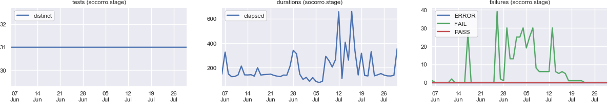

Generated on 02-Aug-2017 at 20:20:01.
A total of 853 tests ran 4,050,283 times between 07-Jun-2017 and 02-Aug-2017.
Percentage of tests that had the expected outcome.
| test_that_filter_by_city_works | 0% |
| test_that_filter_by_region_works | 0% |
| test_search_for_empty_string_redirects_to_search_page | 10% |
| test_that_search_returns_results_for_irc_nickname | 10% |
| test_group_description_edit | 10% |
| test_that_filter_by_country_works | 10% |
| test_that_search_returns_results_for_first_name | 14% |
| test_skill_deletion | 34% |
| test_skill_addition | 45% |
| test_that_user_can_create_and_delete_group | 48% |
| test_filter_by_job_keyword | 0% |
| test_load_next_results | 0% |
| test_expanding_group_count | 21% |
| test_filter_by_test_status | 22% |
| test_unclassified_failure | 26% |
| test_set_as_top_of_range | 28% |
| test_open_single_result | 28% |
| test_clear_pinboard | 31% |
| test_open_unclassified_failure_log | 33% |
| test_switch_repo | 34% |
| test_search_for_not_existing_mozillian_when_logged_in | 41% |
| test_group_description_edit | 46% |
| test_that_search_returns_results_for_first_name | 59% |
| test_that_search_returns_results_for_irc_nickname | 59% |
| test_that_user_can_create_and_delete_group | 61% |
| test_that_filter_by_region_works | 64% |
| test_that_search_returns_results_for_email_substring | 64% |
| test_that_filter_by_city_works | 64% |
| test_that_non_us_user_can_set_get_involved_date | 66% |
| test_skill_addition | 66% |
| test_public_api_navigation | 76% |
| test_top_crasher_reports_tab_has_uuid_report | 80% |
| test_that_only_browser_reports_have_browser_icon | 83% |
| test_selecting_one_version_doesnt_show_other_versions | 83% |
| test_search_for_valid_signature | 83% |
| test_that_top_crasher_filter_browser_return_results | 83% |
| test_that_top_crasher_filter_all_return_results | 83% |
| test_search_change_column | 84% |
| test_that_top_crasher_filter_plugin_return_results | 84% |
| test_search_with_multiple_lines | 84% |
| test_the_development_channel_section | 0% |
| test_that_user_can_make_a_contribution_without_logging_into_amo | 0% |
| test_that_user_can_contribute_to_an_addon | 0% |
| test_web_extension_submission | 0% |
| test_that_make_contribution_button_is_clickable_and_loads_paypal_frame_while_user_is_logged_in | 0% |
| test_that_make_contribution_button_is_clickable_and_loads_paypal_frame_while_user_is_logged_out | 0% |
| test_user_my_favorites_page | 11% |
| test_that_verifies_the_url_of_the_statistics_page | 20% |
| test_that_addon_number_of_total_downloads_is_correct | 20% |
| test_searching_for_complete_themes | 80% |
| test_search_for_not_existing_mozillian_when_logged_in | 24% |
| test_that_filter_by_city_works | 66% |
| test_that_filter_by_region_works | 69% |
| test_that_search_returns_results_for_first_name | 95% |
| test_that_user_can_view_external_accounts | 97% |
| test_that_search_returns_results_for_irc_nickname | 97% |
| test_profile_deletion_confirmation | 98% |
| test_that_search_returns_results_for_email_substring | 98% |
| test_that_links_in_the_services_page_return_200_code | 98% |
| test_login_logout | 98% |
| test_the_development_channel_section | 0% |
| test_that_user_can_make_a_contribution_without_logging_into_amo | 0% |
| test_that_user_can_contribute_to_an_addon | 0% |
| test_web_extension_submission | 0% |
| test_that_make_contribution_button_is_clickable_and_loads_paypal_frame_while_user_is_logged_out | 46% |
| test_that_make_contribution_button_is_clickable_and_loads_paypal_frame_while_user_is_logged_in | 66% |
| test_that_checks_if_the_extensions_are_sorted_by_recently_updated | 95% |
| test_searching_for_complete_themes | 97% |
| test_that_complete_themes_loads_landing_page_correctly | 98% |
| test_sorting_by_downloads | 98% |
| test_that_firebug_rating_is_correct | 0% |
| test_the_development_channel_section | 0% |
| test_that_searching_for_a_tag_returns_results | 31% |
| test_that_search_results_return_20_results_per_page | 39% |
| test_that_daily_users_in_api_equals_daily_users_in_details_page | 94% |
| test_that_addon_number_of_total_downloads_is_correct | 95% |
| test_addons_author_link | 97% |
| test_that_register_login_link_is_present_in_addon_details_page | 98% |
| test_that_reviews_in_api_equals_reviews_in_details_page | 98% |
| test_sorted_by_most_users_is_default | 98% |
| test_search_flow_param_values | 100% |
| test_campaign_flow_param_values | 100% |
| test_organic_flow_param_values | 100% |
| test_campaign_flow_param_values | 100% |
| test_organic_flow_param_values | 100% |
| test_search_flow_param_values | 100% |
Tests with the highest total number of failures.
| test_public_api_navigation | 169 |
| test_top_crasher_reports_tab_has_uuid_report | 140 |
| test_that_only_browser_reports_have_browser_icon | 124 |
| test_selecting_one_version_doesnt_show_other_versions | 122 |
| test_search_for_valid_signature | 122 |
| test_that_top_crasher_filter_browser_return_results | 120 |
| test_that_top_crasher_filter_all_return_results | 120 |
| test_search_change_column | 115 |
| test_that_top_crasher_filter_plugin_return_results | 114 |
| test_search_with_multiple_lines | 113 |
| test_verify_firefox_aliases_redirect_to_correct_products | 227 |
| test_verify_firefox_aliases_redirect_to_correct_products | 224 |
| test_verify_firefox_aliases_redirect_to_correct_products | 219 |
| test_verify_firefox_aliases_redirect_to_correct_products | 10 |
| test_verify_firefox_aliases_redirect_to_correct_products | 10 |
| test_verify_firefox_aliases_redirect_to_correct_products | 10 |
| test_ie6_winxp_useragent_5_1_redirects_to_correct_version | 7 |
| test_verify_firefox_aliases_redirect_to_correct_products | 7 |
| test_verify_firefox_aliases_redirect_to_correct_products | 7 |
| test_verify_firefox_aliases_redirect_to_correct_products | 7 |
| test_load_next_results | 58 |
| test_filter_by_job_keyword | 58 |
| test_expanding_group_count | 46 |
| test_filter_by_test_status | 45 |
| test_unclassified_failure | 43 |
| test_set_as_top_of_range | 42 |
| test_open_single_result | 42 |
| test_clear_pinboard | 40 |
| test_open_unclassified_failure_log | 39 |
| test_switch_repo | 38 |
| test_search_for_not_existing_mozillian_when_logged_in | 35 |
| test_group_description_edit | 32 |
| test_that_search_returns_results_for_first_name | 24 |
| test_that_search_returns_results_for_irc_nickname | 24 |
| test_that_user_can_create_and_delete_group | 23 |
| test_that_filter_by_region_works | 21 |
| test_that_filter_by_city_works | 21 |
| test_that_search_returns_results_for_email_substring | 21 |
| test_that_non_us_user_can_set_get_involved_date | 20 |
| test_skill_addition | 20 |
| test_that_make_contribution_button_is_clickable_and_loads_paypal_frame_while_user_is_logged_out | 61 |
| test_that_make_contribution_button_is_clickable_and_loads_paypal_frame_while_user_is_logged_in | 61 |
| test_web_extension_submission | 61 |
| test_the_development_channel_section | 61 |
| test_that_user_can_contribute_to_an_addon | 61 |
| test_that_user_can_make_a_contribution_without_logging_into_amo | 61 |
| test_user_my_favorites_page | 54 |
| test_that_verifies_the_url_of_the_statistics_page | 49 |
| test_that_addon_number_of_total_downloads_is_correct | 49 |
| test_searching_for_complete_themes | 12 |
| test_that_filter_by_city_works | 29 |
| test_that_filter_by_region_works | 29 |
| test_search_for_empty_string_redirects_to_search_page | 26 |
| test_that_filter_by_country_works | 26 |
| test_group_description_edit | 26 |
| test_that_search_returns_results_for_irc_nickname | 26 |
| test_that_search_returns_results_for_first_name | 25 |
| test_skill_deletion | 19 |
| test_skill_addition | 16 |
| test_that_non_us_user_can_set_get_involved_date | 15 |
| test_the_development_channel_section | 59 |
| test_web_extension_submission | 59 |
| test_that_user_can_make_a_contribution_without_logging_into_amo | 59 |
| test_that_user_can_contribute_to_an_addon | 59 |
| test_that_make_contribution_button_is_clickable_and_loads_paypal_frame_while_user_is_logged_out | 32 |
| test_that_make_contribution_button_is_clickable_and_loads_paypal_frame_while_user_is_logged_in | 20 |
| test_that_checks_if_the_extensions_are_sorted_by_recently_updated | 3 |
| test_searching_for_complete_themes | 2 |
| test_that_complete_themes_loads_landing_page_correctly | 1 |
| test_other_applications_thunderbird | 1 |
| test_the_development_channel_section | 62 |
| test_that_firebug_rating_is_correct | 53 |
| test_that_searching_for_a_tag_returns_results | 43 |
| test_that_search_results_return_20_results_per_page | 38 |
| test_that_daily_users_in_api_equals_daily_users_in_details_page | 4 |
| test_that_addon_number_of_total_downloads_is_correct | 3 |
| test_addons_author_link | 2 |
| test_next_button_is_disabled_on_the_last_page | 1 |
| test_that_register_login_link_is_present_in_addon_details_page | 1 |
| test_that_checks_the_most_popular_section_exists | 1 |
| test_verify_firefox_aliases_redirect_to_correct_products | 20 |
| test_verify_firefox_aliases_redirect_to_correct_products | 20 |
| test_verify_firefox_aliases_redirect_to_correct_products | 20 |
| test_ie6_winxp_useragent_5_2_redirects_to_correct_version | 3 |
| test_ie6_winxp_useragent_5_1_redirects_to_correct_version | 3 |
| test_ie6_winxp_useragent_5_2_redirects_to_correct_version | 3 |
| test_ie6_winxp_useragent_5_2_redirects_to_correct_version | 3 |
| test_ie6_winxp_useragent_5_1_redirects_to_correct_version | 3 |
| test_ie6_winxp_useragent_5_2_redirects_to_correct_version | 2 |
| test_ie6_winxp_useragent_5_2_redirects_to_correct_version | 2 |
| test_search_for_not_existing_mozillian_when_logged_in | 45 |
| test_that_filter_by_city_works | 20 |
| test_that_filter_by_region_works | 18 |
| test_that_search_returns_results_for_first_name | 3 |
| test_that_user_can_view_external_accounts | 2 |
| test_that_search_returns_results_for_irc_nickname | 2 |
| test_login_logout | 1 |
| test_profile_deletion_confirmation | 1 |
| test_logout_verify_bid | 1 |
| test_that_links_in_the_services_page_return_200_code | 1 |
Slowest average test durations.
| test_that_search_results_return_20_results_per_page | 2 minutes |
| test_that_user_can_make_a_contribution_without_logging_into_amo | a minute |
| test_that_user_can_contribute_to_an_addon | a minute |
| test_that_search_all_add_ons_results_have_pagination_that_moves_through_results | a minute |
| test_sorting_by_downloads | a minute |
| test_sorting_by_most_recently_updated | a minute |
| test_user_can_login_and_logout | a minute |
| test_user_can_update_profile_information_in_account_settings_page | 59 seconds |
| test_the_name_of_each_site_navigation_menu_in_the_header | 59 seconds |
| test_web_extension_submission | 56 seconds |
| test_that_search_results_return_20_results_per_page | a minute |
| test_that_user_can_make_a_contribution_without_logging_into_amo | a minute |
| test_that_user_can_contribute_to_an_addon | a minute |
| test_that_search_all_add_ons_results_have_pagination_that_moves_through_results | a minute |
| test_user_can_login_and_logout | a minute |
| test_sorting_by_downloads | a minute |
| test_user_can_update_profile_information_in_account_settings_page | a minute |
| test_sorting_by_most_recently_updated | a minute |
| test_the_name_of_each_site_navigation_menu_in_the_header | a minute |
| test_web_extension_submission | 57 seconds |
| test_that_search_results_return_20_results_per_page | 2 minutes |
| test_that_search_all_add_ons_results_have_pagination_that_moves_through_results | a minute |
| test_sorting_by_downloads | a minute |
| test_sorting_by_most_recently_updated | 59 seconds |
| test_the_name_of_each_site_navigation_menu_in_the_header | 57 seconds |
| test_image_viewer_navigation | 53 seconds |
| test_navigating_to_author_addons | 39 seconds |
| test_sorting_by_number_of_most_users | 38 seconds |
| test_that_checks_if_the_extensions_are_sorted_by_recently_updated | 38 seconds |
| test_sorting_by_newest | 38 seconds |
| test_that_user_can_modify_external_accounts_irc_nickname | 3 minutes |
| test_skill_deletion | 3 minutes |
| test_that_non_us_user_can_set_get_involved_date | 2 minutes |
| test_group_description_edit | 2 minutes |
| test_edit_profile_information | 2 minutes |
| test_skill_addition | 2 minutes |
| test_that_search_returns_results_for_irc_nickname | a minute |
| test_logout_verify_bid | a minute |
| test_private_groups_field_when_not_logged_in | a minute |
| test_that_user_can_create_and_delete_group | a minute |
| test_that_user_can_modify_external_accounts_irc_nickname | 3 minutes |
| test_that_non_us_user_can_set_get_involved_date | 2 minutes |
| test_edit_profile_information | a minute |
| test_group_description_edit | a minute |
| test_skill_addition | a minute |
| test_logout_verify_bid | a minute |
| test_private_groups_field_when_not_logged_in | a minute |
| test_skill_deletion | a minute |
| test_new_user_cannot_see_groups_or_functional_areas | a minute |
| test_that_user_can_create_and_delete_group | 51 seconds |
| test_status_results_success | 4 minutes |
| test_get_next_results | 54 seconds |
| test_load_next_results | 51 seconds |
| test_remove_email_address_filter | 50 seconds |
| test_filter_by_test_status | 49 seconds |
| test_status_results_coalesced | 44 seconds |
| test_filter_by_job_keyword | 42 seconds |
| test_filter_panel_reset_button | 39 seconds |
| test_treeherder_dropdown | 38 seconds |
| test_filter_by_email | 38 seconds |
| test_search_change_column | a minute |
| test_that_lowest_version_topcrashers_do_not_return_errors | 51 seconds |
| test_that_only_plugin_reports_have_plugin_icon | 42 seconds |
| test_that_only_browser_reports_have_browser_icon | 36 seconds |
| test_that_top_crashers_reports_links_work | 33 seconds |
| test_selecting_one_version_doesnt_show_other_versions | 33 seconds |
| test_that_top_crashers_reports_links_work | 33 seconds |
| test_public_api_navigation | 31 seconds |
| test_that_top_crashers_reports_links_work | 28 seconds |
| test_top_crasher_reports_tab_has_uuid_report | 28 seconds |
| test_search_change_column | a minute |
| test_that_lowest_version_topcrashers_do_not_return_errors | 50 seconds |
| test_that_only_plugin_reports_have_plugin_icon | 43 seconds |
| test_that_only_browser_reports_have_browser_icon | 38 seconds |
| test_that_top_crashers_reports_links_work | 32 seconds |
| test_selecting_one_version_doesnt_show_other_versions | 32 seconds |
| test_that_top_crashers_reports_links_work | 32 seconds |
| test_public_api_navigation | 31 seconds |
| test_that_top_crashers_reports_links_work | 31 seconds |
| test_top_crasher_reports_tab_has_uuid_report | 27 seconds |
| test_logout_verify_bid | a minute |
| test_new_user_cannot_see_groups_or_functional_areas | a minute |
| test_profile_deletion_confirmation | 39 seconds |
| test_that_links_in_the_services_page_return_200_code | 35 seconds |
| test_that_filter_by_country_works | 35 seconds |
| test_that_filter_by_city_works | 35 seconds |
| test_search_for_not_existing_mozillian_when_logged_in | 34 seconds |
| test_that_filter_by_region_works | 34 seconds |
| test_login_logout | 34 seconds |
| test_that_user_can_view_external_accounts | 33 seconds |
| test_verify_firefox_aliases_redirect_to_correct_products | a moment |
| test_verify_firefox_aliases_redirect_to_correct_products | a moment |
| test_verify_firefox_aliases_redirect_to_correct_products | a moment |
| test_verify_locales_redirect_to_the_expected_product | a moment |
| test_verify_locales_redirect_to_the_expected_product | a moment |
| test_verify_locales_redirect_to_the_expected_product | a moment |
| test_verify_releng_aliases_match_what_we_expect | a moment |
| test_verify_locales_redirect_to_the_expected_product | a moment |
| test_verify_locales_redirect_to_the_expected_product | a moment |
| test_verify_locales_redirect_to_the_expected_product | a moment |
Most machine time consumed by tests over multiple executions.
| test_search_change_column | 12 hours |
| test_that_lowest_version_topcrashers_do_not_return_errors | 9 hours |
| test_that_only_plugin_reports_have_plugin_icon | 7 hours |
| test_that_only_browser_reports_have_browser_icon | 6 hours |
| test_that_top_crashers_reports_links_work | 6 hours |
| test_that_top_crashers_reports_links_work | 5 hours |
| test_selecting_one_version_doesnt_show_other_versions | 5 hours |
| test_top_crasher_reports_tab_has_uuid_report | 5 hours |
| test_search_with_multiple_lines | 4 hours |
| test_that_top_crashers_reports_links_work | 4 hours |
| test_verify_releng_aliases_match_what_we_expect | 37 minutes |
| test_verify_firefox_aliases_redirect_to_correct_products | 36 minutes |
| test_verify_firefox_aliases_redirect_to_correct_products | 34 minutes |
| test_verify_firefox_aliases_redirect_to_correct_products | 32 minutes |
| test_verify_locales_redirect_to_the_expected_product | 26 minutes |
| test_verify_locales_redirect_to_the_expected_product | 25 minutes |
| test_verify_locales_redirect_to_the_expected_product | 25 minutes |
| test_verify_locales_redirect_to_the_expected_product | 24 minutes |
| test_ie6_winxp_useragent_5_1_redirects_to_correct_version | 23 minutes |
| test_ie6_winxp_useragent_5_1_redirects_to_correct_version | 23 minutes |
| test_that_user_can_make_a_contribution_without_logging_into_amo | an hour |
| test_that_search_results_return_20_results_per_page | an hour |
| test_that_user_can_contribute_to_an_addon | an hour |
| test_user_can_login_and_logout | an hour |
| test_user_can_update_profile_information_in_account_settings_page | 59 minutes |
| test_the_name_of_each_site_navigation_menu_in_the_header | 57 minutes |
| test_web_extension_submission | 55 minutes |
| test_image_viewer_navigation | 53 minutes |
| test_sorting_by_downloads | 52 minutes |
| test_sorting_by_most_recently_updated | 51 minutes |
| test_that_user_can_make_a_contribution_without_logging_into_amo | an hour |
| test_that_search_results_return_20_results_per_page | an hour |
| test_that_user_can_contribute_to_an_addon | an hour |
| test_user_can_login_and_logout | 57 minutes |
| test_user_can_update_profile_information_in_account_settings_page | 56 minutes |
| test_the_name_of_each_site_navigation_menu_in_the_header | 55 minutes |
| test_web_extension_submission | 53 minutes |
| test_sorting_by_most_recently_updated | 52 minutes |
| test_that_search_all_add_ons_results_have_pagination_that_moves_through_results | 52 minutes |
| test_sorting_by_downloads | 52 minutes |
| test_that_search_results_return_20_results_per_page | an hour |
| test_the_name_of_each_site_navigation_menu_in_the_header | 56 minutes |
| test_sorting_by_downloads | 54 minutes |
| test_sorting_by_most_recently_updated | 53 minutes |
| test_that_search_all_add_ons_results_have_pagination_that_moves_through_results | 53 minutes |
| test_image_viewer_navigation | 53 minutes |
| test_navigating_to_author_addons | 42 minutes |
| test_that_make_contribution_button_is_clickable_and_loads_paypal_frame_while_user_is_logged_out | 38 minutes |
| test_that_checks_if_the_extensions_are_sorted_by_recently_updated | 37 minutes |
| test_that_checks_if_the_extensions_are_sorted_by_newest | 37 minutes |
| test_organic_flow_param_values | 10 hours |
| test_search_flow_param_values | 9 hours |
| test_campaign_flow_param_values | 9 hours |
| test_that_user_can_modify_external_accounts_irc_nickname | 2 hours |
| test_edit_profile_information | an hour |
| test_that_non_us_user_can_set_get_involved_date | an hour |
| test_group_description_edit | an hour |
| test_logout_verify_bid | an hour |
| test_skill_deletion | 54 minutes |
| test_new_user_cannot_see_groups_or_functional_areas | 48 minutes |
| test_skill_addition | 47 minutes |
| test_group_invitations | 41 minutes |
| test_that_user_can_create_and_delete_group | 40 minutes |
| test_snippet_set_present | an hour |
| test_snippet_set_present | an hour |
| test_that_snippets_are_well_formed_xml | an hour |
| test_all_links | an hour |
| test_all_links | an hour |
| test_that_snippets_are_well_formed_xml | an hour |
| test_snippet_set_present | an hour |
| test_that_snippets_are_well_formed_xml | an hour |
| test_all_links | an hour |
| test_all_links | 52 minutes |
| test_snippet_set_present | an hour |
| test_all_links | an hour |
| test_that_snippets_are_well_formed_xml | an hour |
| test_snippet_set_present | an hour |
| test_that_snippets_are_well_formed_xml | an hour |
| test_all_links | an hour |
| test_snippet_set_present | an hour |
| test_all_links | an hour |
| test_that_snippets_are_well_formed_xml | an hour |
| test_all_links | 40 minutes |
| test_status_results_success | 2 hours |
| test_load_next_results | 42 minutes |
| test_get_next_results | 41 minutes |
| test_status_results_coalesced | 32 minutes |
| test_treeherder_dropdown | 31 minutes |
| test_remove_email_address_filter | 31 minutes |
| test_filter_panel_reset_button | 29 minutes |
| test_filter_by_job_keyword | 28 minutes |
| test_close_open_panels | 27 minutes |
| test_filter_by_job_keyword | 27 minutes |